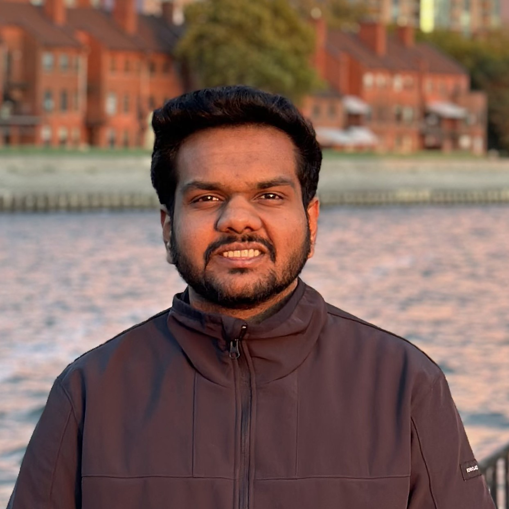
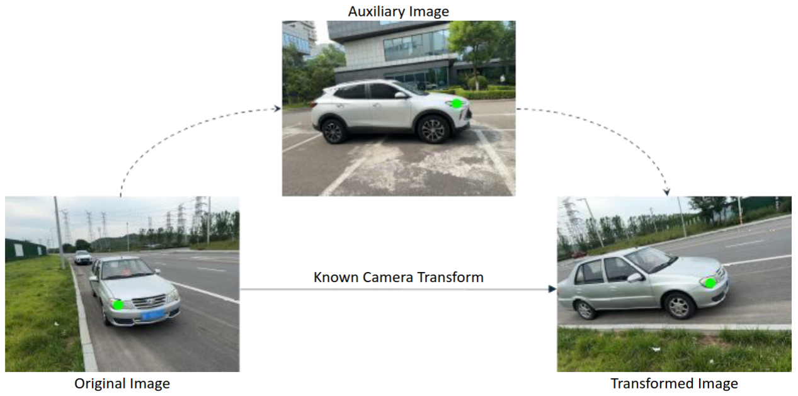
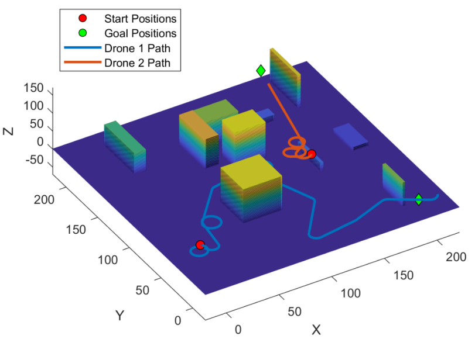
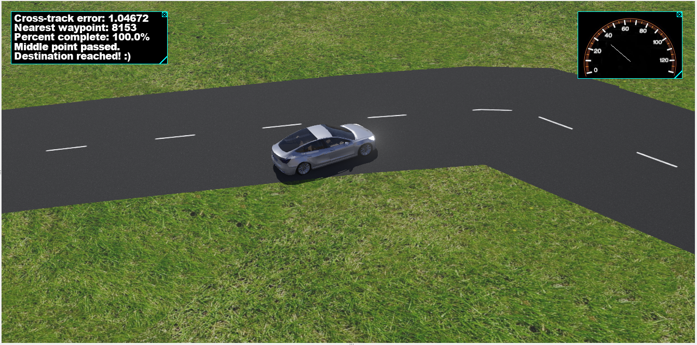
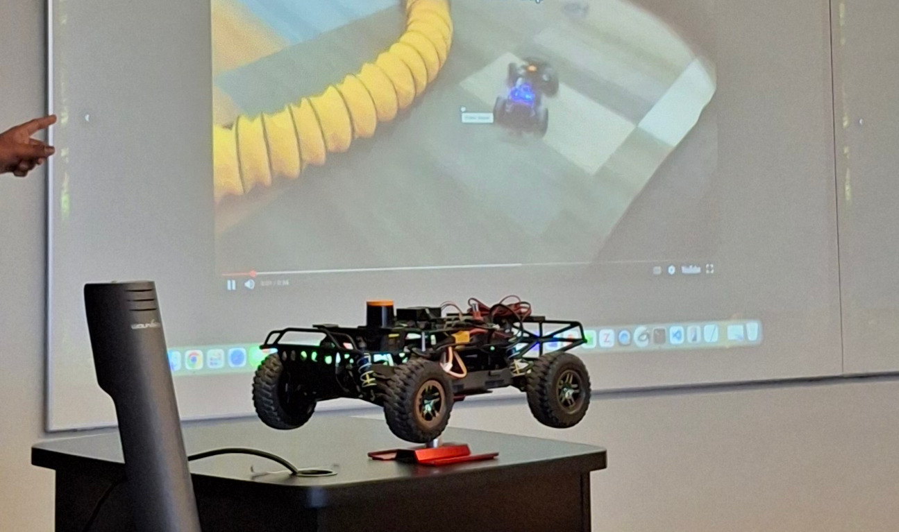
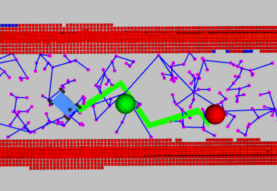

Hi there, I am Vaibhav Parekh!
I am a Master's student at
Carnegie Mellon University,
and I BUILD ROBOTS.
I research at
CERLAB
(Computational Engineering and Robotics Laboratory) on problems around
Perception and Front-end SLAM.
Little photography and loads (miles) of driving is how I spend my free time.
05/2022
Undergrad in MechE concluded
06/2022
Joined Tata Power Renewables
08/2024
Started Master's @ CMU
10/2024
Joined CERLAB
07/2025
Intern @ Inductive Robotics
09/2025
Intern @ Lightspeed Robotics
05/2026
Master's @ CMU concludes 🎓
Research and Projects

Unsupervised Landmark Discovery for Multi-Viewpoint Objects
Master's thesis; extending unsupervised landmark discovery from 2D/frontal datasets to multi-viewpoint objects.

Multi UAV Search and Rescue
A multi-UAV system for search and rescue in crowded indoor environments using RRT and Next-Best-View planning.

AutoTip — Pen Tracking & Writing System
A computer vision system that enables digital writing on any surface using Lucas-Kanade optical flow.

Controller Design for an Autonomous Vehicle
Modern control systems powered by A* path planning and EKF SLAM, simulated in Webots.

F1-Tenth Autonomous Racing: Reactive Navigation
Reactive obstacle avoidance and wall following for high-speed 1/10th scale autonomous racing using LIDAR.

F1-Tenth Autonomous Racing: Map-based Navigation
SLAM, global path planning, Pure Pursuit, and MPC for optimal lap times on a known track.